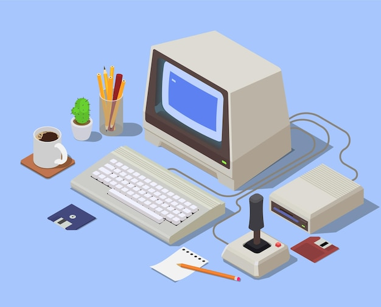

RPL adalah jurusan yang mempelajari cara membuat perangkat lunak seperti website, aplikasi, dan game. Di jurusan ini siswa belajar bahasa pemrograman, database, dan desain tampilan. Lulusannya bisa langsung bekerja sebagai programmer atau melanjutkan kuliah di bidang informatika.

Sekolah SMK Muhammadiyah 3 mempunyai lab komputer yang lengkap. di sana, sudah terpasang Wi-Fi serta alat atau aplikasi yang biasa digunakan untuk kegiatan praktik coding di dalam komputer seperti Visual Studio Code, Dev C++, dan juga Laragon.
Berbeda dengan jurusan lain yang banyak hafalan, di RPL siswa sejak kelas 10 sudah langsung praktik membuat website, game sederhana, dan sistem informasi, sehingga saat lulus siswa sudah punya portofolio karya nyata yang bisa ditunjukkan ke perusahaan, bukan hanya ijazah saja, dan ini membuat lulusan RPL lebih siap bersaing di dunia kerja.
Lulusan RPL sudah siap langsung kerja setelah lulus tanpa perlu kuliah lagi, karena selama sekolah siswa sudah dibekali keterampilan yang benar-benar dibutuhkan perusahaan seperti membuat website, aplikasi, dan database, ditambah lagi siswa sudah terbiasa dengan praktik kerja lapangan (PKL) / magang di perusahaan, sehingga sudah tahu cara kerja di dunia nyata, cara kerja dalam tim, dan cara menghadapi deadline proyek, jadi perusahaan tidak perlu lagi melatih dari nol dan lulusan RPL bisa langsung diterima kerja.
| Tingkat Kelas | Mata Pelajaran Utama | Proyek Praktikum |
|---|---|---|
| Kelas X RPL | Algoritma, Dasar Pemrograman Python, HTML & CSS Dasar | Landing Page Responsif & Aplikasi Kasir Sederhana |
| Kelas XI RPL | Pemrograman Web Dinamis (PHP Native) & Basis Data MySQL | Sistem Informasi Perpustakaan (CRUD & Login) |
| Kelas XII RPL | Framework Laravel, Pengujian Keamanan Web, & Persiapan UKK | Aplikasi Web Full-Stack Siap Industri |